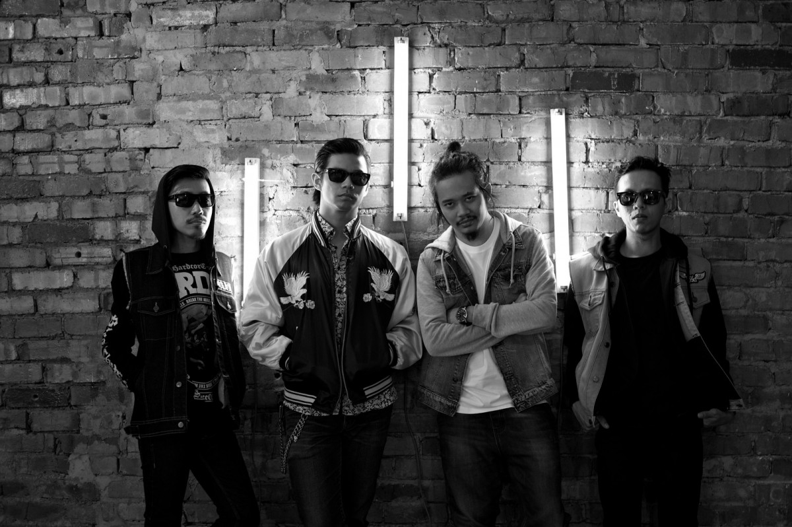
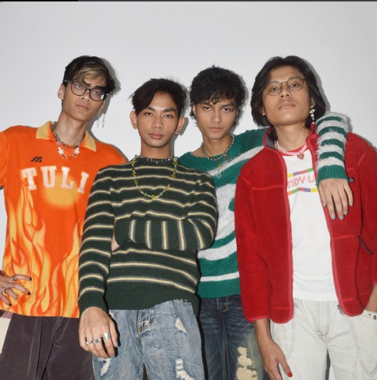
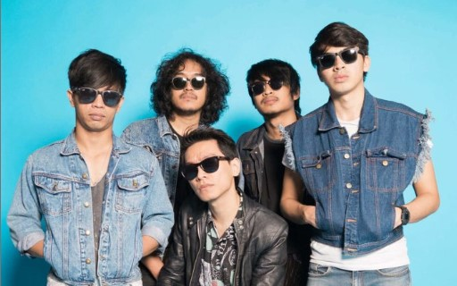
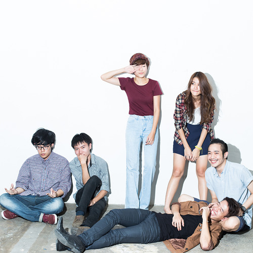
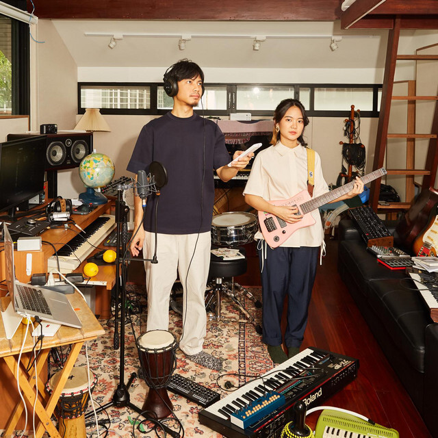

MY INTEREST IN SONGS
MY FAVOURITE ARTISTS
I spend my free time listening to and singing songs. I like listening to indie and pop songs. I listen to songs every day. When I am stressed and tired songs gives me peace of mind. Songs make me happy when I'm sad but there will be times when I can't listen to the song at all. In a day I will at least spend 2 hours listening to songs.
Below I list some of my favorite artists along with my favorite songs based on the artist:

HUJAN
The Band began forming in 2005 after Noh upload some of his desmos to Mysapace. In 2006 the band was officially formed and they began to work on 1,2,3, Go! , their first EP while touring. In 2009 the band won the Best Rock Album and Best Rock Song categories in the 16th Anugerah Industri Muzik. In 2013 the band announced their Sang Enemy Worldwide Transgression 2013 tour, where they stated they would be performing with Love Me Butch, Reception for Hujan has been positive, with the band considered to be one of the leading alternative music acts in Malaysia.
-
Biarkan Saja
-
Papa Mama
Kotak Hati
Jangan Lupakan Aku
Click on the play button to play the song:

Midnight Fusic is a Malaysian alternative-rock band based in Kuala Lumpur, Malaysia, comprised of four lads with a psychedelic passion that has propelled them to take over stages at international music festival, number 1 spots on local music charts, and hit of million streams for their single ‘Lovesick’ all within a year.
The band consists of frontman & rhythm guitarist Arif kamarudin, vocalist & lead guitarist Adrian Danial, self-taught bassist Firdaus azmi, and Muaz Rabbani, who remarkably hones his drumming skills upon joining the band.
In 2020, they were named Band of the Year by The Platform Awards as well as being nominated for Best Music Video for their song “Vertigo”.
The band has had a pretty good run since their debut. Their “When Love Was Around” EP has accumulated 1.8 million streams to date, whereas their “Caramel Cream” has accumulated 1.3 million streams.
Midnight usic has performed at Good Vibes Festival 2019, WeTheFest Festival in Jakarta, and BayBeats Festival in Singapore as well as Urbanscapes 2018 where they shared the same stage with Wolf Alice and Bil Musa, just to name a few.
They were also selected as Asia’s Deezer Next Artist for 2018 (Malaysia and Singapore) and was the opening act for LANY 2018.
-
Midnight Fusic - Vertigo (Official Music Video) ft. Lunadira
Midnight Fusic - Caramel Cream
-
When Love Was Around
-
Under The Weather
Click on the play button to play the song:

ORKES A HIZADIN
The 5 talented young men who run Orkes A Hizadin are now based in the capital, Kuala Lumpur. The music stream and genre featured is Alternative Rock. The 5 talented young men who run Orkes A Hizadin are Amir as Vocalist/Songwriter, Ully as Guitarist/Producer, Nash as Guitarist, Ed also as Guitarist, and Opie as Drummer.
Their art journey began inadvertently at the end of 2016 when the country’s current leading producer, AG Coco randomly combined them via Whatsapp group to debut their first performance at Rantai Art Fest 2016 through their first single “Success” and Orkes A Hizadin was born.
The concept of Orkes A Hizadin's song is sincerely born from the heart. Each song and lyric is from a heart diary based on the real character and character of life and sincerity that has tied and captivated the hearts and halwa of today's listeners.
-
Rezeki
Kejayaan

PART TIME MUSICIANS
Part Time Musicians is a young indie folk band with six members. They are, for lack of a more marketable term, a group that specialises in boys and girls singing in harmony. And the pleasure they take from it is evident. We are aware of that as well. They're also self-described as "not much of a rock band," but what they want to do is do something to demonstrate their appreciation for the music they've loved since boyhood. Their self-titled debut album received a lot of positive feedback, with reviewers praising their improved lyrics and vocal harmonies.
In June 2013, the five faces' debut single "Vacation Time" reached number one on Fat Radio's Top 40 chart (Thailand). the five personalities "Would You Mind?" is Part Time Musicians' second single, which was released shortly. On violin is Chawalit Saowapakpongchai of Chladni Chandi, as well as Noparuj Satjawan, a great sitar player. This song is a fun, lively melody with enough unique elements to keep it from being too cutesy while still representing the exciting-dark side of the instrument they created and included in the song.
Their music was influenced by bands they admired, such as Nick Drake, Bob Dylan, Fleet Foxes, Mumford and Sons, until some side-inspirations of Pink Floyd guitar riffs and psychedelic music emerged.
In addition, they draw influences from folk music, individual pop, and choral music, as well as their English lyrics. In October, not long after the success of their second song, the band discovered the final piece of the puzzle in the form of a violinist for their latest hit "The Haunted House." The passionate and beautiful song features small gospelish voices and mind-blowing guitar solos, and it's merged with indie-folk. To create a sense of hope and solitude, the words are primarily surrounded by empty space. Part Time Musicians have clearly relied on the eternal power of music throughout their careers. Critics recognised they were tremendously talented in the songwriting and harmony areas when they first started making and performing music. From the beginning, it was evident that they would succeed. And they succeeded.
They just released "The Only One" for Valentine's Day in 2015. The voices are overly charming, and the violin melodies will blow your mind and transport you back to your grandparents' period. After "The Haunted House," which drew you to tears with its melancholy and heartbreaking lyrics, this is another happy and cosy track. But that's all over now, till their next adventure begins.
-
The Only One [Official Video]
Vacation Time [Official Video]
-
Sad Song
Click on the play button to play the song:
 PLASTIC PLASTIC
Plastic Plastic (พลาสติก พลาสติก) is a Bangkok Syn Pop duo consisting of a vocalist and a keyboard player, “Pleng”” (Tongta Jitdee) and a guitarist, “Pong”” (Pokpong Jitdee). With their syn-pop music type, it created a new music scene among Thai teenagers for over the past few years.
In 2016, Plastic Plastic released a debut album, STAY AT HOME, which is an electronic-acoustic genre consisting of 9 songs. Most of the songs are composed in English. The album received such an enormous positive feedback, creating Plastic Plastic to be the representative of the new generation bands as well as the new music icon for Thai teenagers.
Thereafter, they separately worked on their own projects. Pong has gathered with his friend to create a quintet tropical pop band, “Gym and Swim.” The band created a great phenomenon of touring around Asia including South Korea, Japan, and Taiwan. It was one of the Top 5 Best Southeast Asian bands ranked by a well-known British style magazine, Dazed. For Pleng, she got a chance to work with Scrubb, an all-time hit band in Thailand. Both of them also collaborate with Ter Nawapol, a talented film director to produce a soundtrack for the movie, “Girl Don’t Cry”.
Recently in 2018, Plastic Plastic comes back with their new album ready to be released under the music label, What The Duck. The new album will bring more contemporary vibes due to their syn pop type of music combining with the use of the synthesizer, recorder, and natural artificial sounds. The new album consists of 7 songs including five songs composed in English and two in Thai.
-
hate you love you [Official MV]
SCRUBB feat.Plastic Plastic - Surfing [Official Music Video]
CUCO
Omar Banos (born June 26, 1998), known professionally as Cuco, is a Mexican American (Chicano) singer-songwriter and record producer from Hawthorne, California. His fame escalated after releasing "Lo Que Siento" (2017), which attracted over 191 million streams on Spotify alone. Cuco self-released his first two EPs, Wannabewithu (2016) and Songs4u (2017) after graduating from Hawthorne High School. In 2019, he released his first studio album Para Mi with Interscope Records. The time between Para Mí and now, which fell during the isolating lockdown of the pandemic, found Cuco facing himself—the good, the bad, and the ugly. Determined to become a healthier version of himself, he had to create a safer world to reside in—starting from within. For the recording of Fantasy Gateway, Cuco planted himself in his parents’ native land of Mexico, specifically Mexico City, to explore all his selves—song by song. His music has gained approximately 290.6 million streams according to Nielsen Music.
My Favourite Songs For This Artist
-
Bossa No Sé ft. Jean Carter (Official Video)
-
Dontmakemefallinlove
-
Piel Canela
Click on the play button to play the song:
ADAN DIAZ
Adan Diaz is a 17-year-old Mexican-American singer and guitarist based outside Chicago. When the pandemic hit and he was confined to his bedroom, Adan found solace in a cracked version of Ableton Live. He recorded new music everyday. He tried out new ways of singing, sometimes in Spanish and other times in English depending on how he was feeling. Slowly but surely he discovered a new vocabulary to communicate the torrent of confusion, surprise, boredom, anger, and lovesickness he's felt during this particularly bizarre moment in human history.
My Favourite Songs For This Artist love2butcant
do re mi
havaianas
Click on the play button to play the song:
-